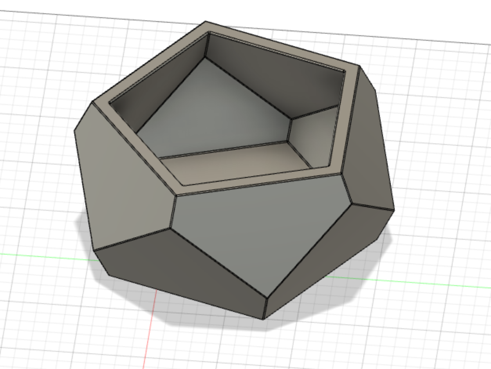
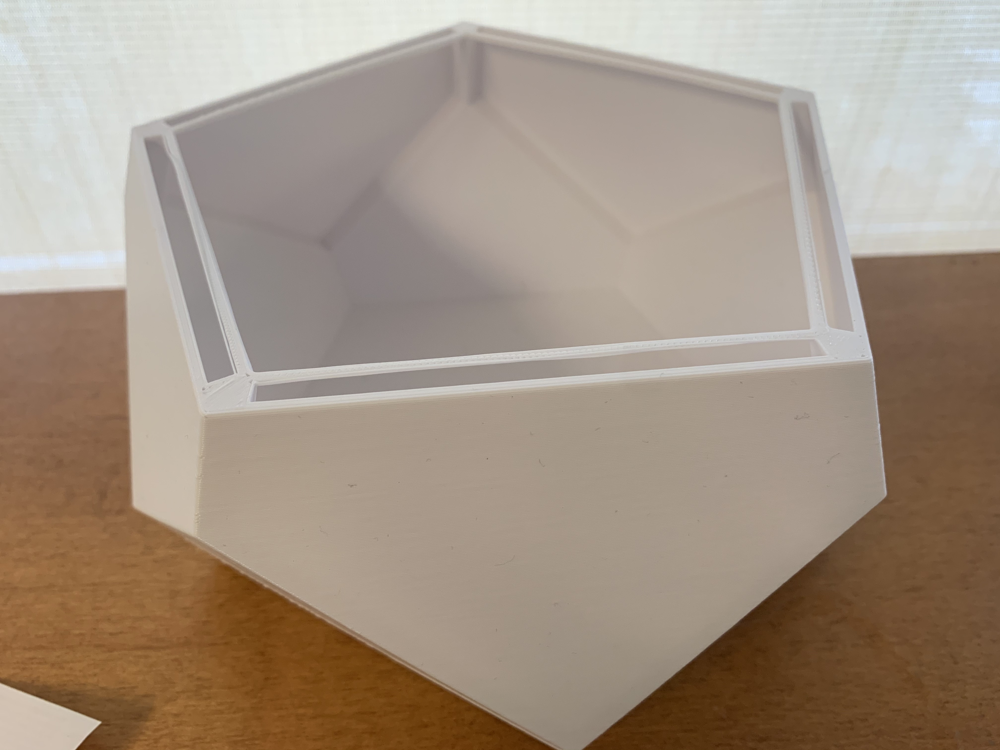
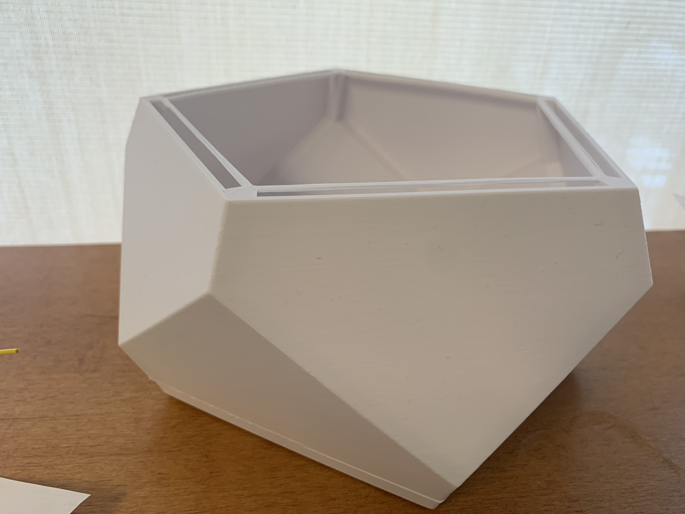

Final Project Plan: Create a centerpiece compromised of LED Strips and a Huzzah that can be controlled using a wireless application and changes light color and style based on people's input on the application.
I first started by working on a model for my final project. Here is some inspiration for the project!
I started working on some sketches and inital thougths for what I wanted my design to look like and how I planned on adding the Arduino and additional components to the design. Where will I fit the Arduino? How many components will I need to create a light show and what are their dimensions?

I found this link about asking how to make geometric 3D shapes in Fusion, so I figured I would try to explore this more and build my design off of that. I also did some preliminary measurements and found that 80mm for each side would be a good place to start. I used parametric modeling just in case I want to change the dimensions later.
This is what I designed using the helpful tutorial on the forum!
After some helpful input in lab about the designing the model to best contain my devices and LED Strips, my final 3D print looked like this:
 Download my G-code file here.